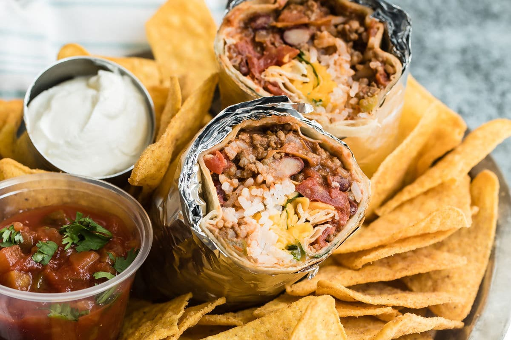

Burritos

Burritos, originating from Mexico, have become a beloved dish worldwide. Typically consisting of a flour tortilla filled with a variety of ingredients, such as seasoned meat, beans, rice, cheese, and vegetables, burritos offer a customizable and satisfying meal. Whether enjoyed for breakfast, lunch, or dinner, their versatility and flavorful combinations make them a favorite among food enthusiasts.
Ingredients
Filling
- 1 tbsp olive oil
- 1 onion, finely chopped
- 2 cloves garlic, minced
- 500g ground beef or turkey
- 1 packet taco seasoning
- 1 can (400g) black beans, drained and rinsed
- 1 cup cooked rice
- 1 cup shredded cheddar cheese
- 1 cup salsa
- 1/2 cup sour cream
Assembly
- 8 large flour tortillas
- 1 cup shredded lettuce
- 1 cup diced tomatoes
- 1 avocado, sliced
- 1/4 cup chopped fresh cilantro
- Lime wedges, for serving
Method
- Heat olive oil in a large skillet over medium heat. Add onions and garlic, and cook until softened, about 5 minutes.
- Add ground beef or turkey to the skillet and cook until browned, breaking it apart with a spoon.
- Stir in taco seasoning and cook for another 2-3 minutes.
- Add black beans and cooked rice to the skillet, stirring until heated through.
- Warm the flour tortillas in a separate skillet or microwave.
- Assemble burritos by spooning the filling onto each tortilla, then topping with cheese, salsa, sour cream, lettuce, tomatoes, avocado, and cilantro.
- Roll up the burritos, tucking in the sides as you go.
- Serve with lime wedges on the side.